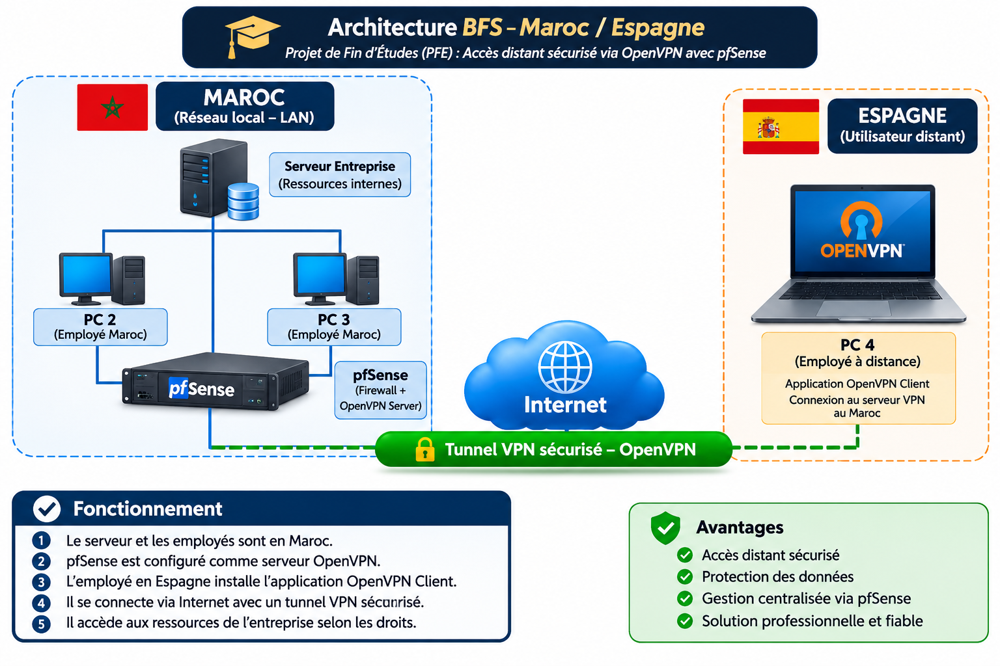

Accès distant sécurisé via OpenVPN avec pfSense
Mise en place d'une solution permettant à un collaborateur situé en Espagne de se connecter de manière sécurisée aux ressources autorisées du réseau de l'entreprise situé au Maroc grâce à un tunnel VPN chiffré.
Contexte & objectif
Permettre un accès distant sécurisé à l'infrastructure privée de l'entreprise sans exposer directement les ressources internes sur Internet.
Contexte
L'infrastructure principale de l'entreprise est située au Maroc. Un collaborateur travaillant depuis l'Espagne doit pouvoir accéder à certaines ressources internes nécessaires à son activité professionnelle.
Objectifs du projet
Architecture BFS — Maroc / Espagne
Vue globale de l'accès distant sécurisé. pfSense assure le rôle de pare-feu et de passerelle VPN, tandis que le poste distant utilise OpenVPN Client.

Architecture logique du projet BFS : réseau local au Maroc et accès distant depuis l'Espagne via OpenVPN.
Fonctionnement de la solution
La connexion suit un parcours sécurisé depuis le poste distant jusqu'aux ressources internes autorisées.
Réseau au Maroc
Le serveur principal et les postes des collaborateurs locaux sont connectés au réseau interne de l'entreprise.
pfSense
pfSense protège l'infrastructure et assure le rôle de Firewall, VPN Gateway et OpenVPN Server.
Employé distant
Le poste situé en Espagne dispose de l'application OpenVPN Client.
Connexion Internet
Le client initie une connexion vers le service OpenVPN de l'entreprise au Maroc.
Tunnel sécurisé
Après authentification, un tunnel OpenVPN chiffré est établi entre le poste distant et pfSense.
Contrôle des accès
Les règles réseau définissent les ressources internes auxquelles l'utilisateur VPN peut accéder.
Travaux réalisés
Les principaux éléments techniques traités au cours de la mise en place de la solution.
Préparation de l'architecture permettant la communication entre le site marocain et l'utilisateur distant.
Utilisation de pfSense comme pare-feu et passerelle VPN de l'infrastructure.
Mise en place du service OpenVPN pour assurer les connexions distantes sécurisées.
Préparation de l'accès OpenVPN permettant au collaborateur en Espagne d'établir la connexion VPN.
Définition de l'accès entre le réseau VPN et les ressources internes nécessaires.
Vérification du tunnel VPN, de la connectivité et de l'accès aux ressources autorisées.
Technologies utilisées
Outils et technologies mobilisés dans l'architecture de la solution.
Résultat du projet
Accès distant sécurisé et contrôlé
La solution permet au collaborateur situé en Espagne d'établir une connexion sécurisée vers l'infrastructure de l'entreprise au Maroc. OpenVPN chiffre les communications, tandis que pfSense contrôle les échanges entre le VPN et les ressources internes autorisées.